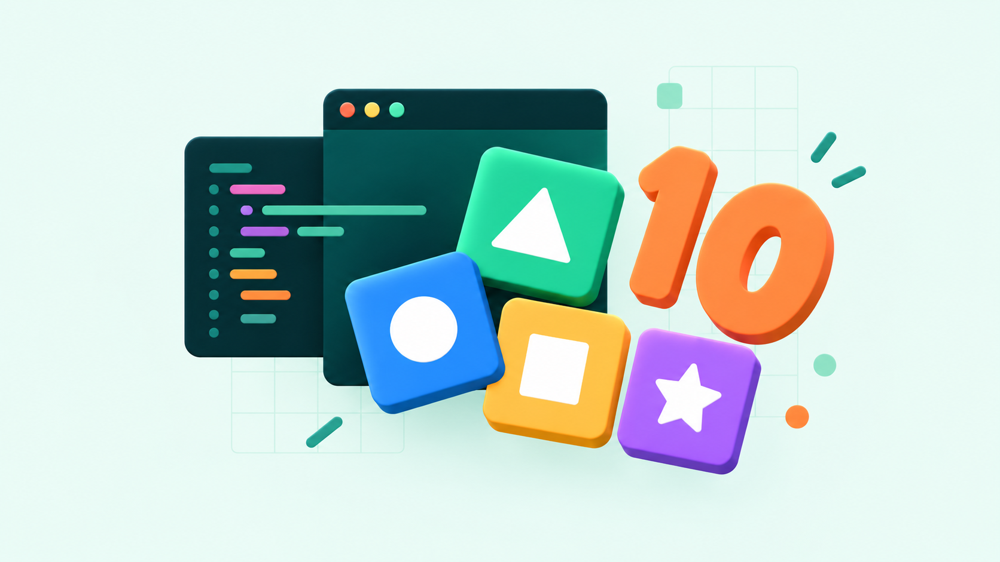

01
記憶配對
翻開卡牌，理解相同份量
把分數、等分圖形與小數配成相同份量的一對。完成三關後，透過概念挑戰檢查理解。
點擊兩張代表相同份量的卡牌，配錯時讀完解釋再繼續。也能用牌號按鈕操作。
學習應用
已加入圖形分數、等值分數與小數三關。配對需比較數量，錯誤會提供通分解釋。
觀察與引導
觀察提示與比較次數，完成後回答概念題，並說明為什麼不同分數能代表相同份量。

把明確的學習目標放進遊戲規則中，讓學習者透過選擇、行動與回饋，練習知識、驗證想法並修正策略。
可以是數位遊戲，也可以是桌遊與角色扮演。關鍵在於完成遊戲挑戰的過程，能讓學習者運用正在學習的能力。單純加上分數與徽章屬於遊戲化設計，教學還需要把活動與學習證據連在一起。
讓學生知道要學會什麼，也知道何時完成挑戰。
把概念轉成需要思考的選擇，保留嘗試與修正的空間。
說明結果與原因，讓下一次行動建立在新的理解上。
十種玩法，十個學習的切入點。點進畫面，親手試一次。
記憶配對
把分數、等分圖形與小數配成相同份量的一對。完成三關後，透過概念挑戰檢查理解。
已加入圖形分數、等值分數與小數三關。配對需比較數量，錯誤會提供通分解釋。
觀察提示與比較次數，完成後回答概念題，並說明為什麼不同分數能代表相同份量。
視覺配對
在四乘四的圖案格中找出唯一相同的 emoji，配對後進入新一輪，在三十秒內累積成績。
原版展示相同圖案的視覺辨識。可將目標改為同義詞、等值分數或相同分類，練習判準。
討論學生依據哪些特徵比較，並依需求放寬作答時間。
滑塊排序
利用唯一的空格滑動相鄰拼圖，逐步還原圖片。初始局面經由合法移動打亂，保留可解性。
先預測下一步的結果再移動，記錄走法並比較。可延伸討論狀態、搜尋與演算法。
請學生解釋策略與修正過程，不只比較完成速度。
路徑規劃
控制貪食蛇收集食物並成長，同時避免撞上自己。轉向限制和不斷增加的身體，讓空間規劃持續改變。
在行動前先畫出預計的路徑，再驗證結果。教學改編可讓食物依數列或詞序出現。
本範例需要鍵盤。將操作失誤與規劃概念分開觀察。
區域擴展
從左上角出發，選擇顏色擴展相連區域，在二十五步內讓十四乘十四的六色棋盤成為同色。
先估計哪個選擇會涵蓋最多區塊，再觀察實際結果，可連結連通區域與遞迴概念。
比較不同策略的步數，並說明每一步的依據。
線索推理
依格子上的數字判斷周圍地雷數量，翻開安全格並標記可疑位置。提供三種難度。
每次翻開前說明理由，分清確定與猜測。可連結科學探究中的證據、假設與驗證。
部分局面需要猜測，評量時應觀察推理理由與過程。
反彈與角度
移動擋板接住球，利用碰撞反彈逐步打掉磚塊。擋板擊中位置會改變球的方向。
先畫出球碰牆後的預測路線，再用實際軌跡驗證，將觀察結果連回角度概念。
這是簡化的遊戲模型，擋板的方向控制與牆壁反射規則不同。
跳躍收集
操作角色左右移動與跳躍，收集星星取得分數。每收完一批星星就增加炸彈，逐步提升挑戰。
原版展示跳躍、收集與危險物。教學改編可把收集目標換成正確詞語、答案或分類。
本範例需要鍵盤，使用時要確認成功條件與學習目標的連結。
限時點擊
在十秒內盡量點擊掉落、彈跳的金幣。每枚金幣消失時得到分數，回合結束顯示成績。
原版展示移動目標、點擊與倒數。教學改編可把目標換成正確答案，練習提取與辨識。
依學生需求取消倒數，操作速度應與概念理解分開評量。
精準堆疊
在方塊列移動時按下放置，只有與下層重疊的方塊會留下。隨高度增加，操作難度逐步提升。
先預估能保留多少方塊，再比較實際結果。可以討論比例、誤差與連續決策。
以個人重試後的改善為主，並鼓勵描述調整時機的策略。
選一個目標，搭配一種機制，再問一次
學生玩過之後，能說明什麼
用可觀察的行為描述目標，例如能說明分類理由或預測反彈方向。
讓成功需要運用目標能力，並提供適切難度、重試機會與可理解的回饋。
請學生解釋選擇、比較策略並連結課程，用反思確認理解。
目標、互動與回饋等機制的研究脈絡
探索更多遊戲程式與互動機制
此頁內嵌九個官方原版遊戲與一個分數學習改編遊戲。遊戲表現不等同學習成效，使用時請依學生需求調整操作與評量。官方 repo 的素材另有使用限制。